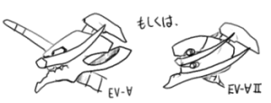

flashback disco (1999/7/7)
日記ページ再開。タイトルをB/W(black and white) diary dogに変更し、おかしい(文法と主に頭が)感じで出発です。主な配色を白黒にして、白黒で落書いたものを出来るだけ投入していこうと思う算段。つきあえ(命令口調ながら目が怯える感じで)！
一人暮らしも一回リセットされ、自炊で生活費を節約！とか頑張ってみたりしてますが、ハムエッグを繕う(誤変換)としてフライパンに落としたハムが恐ろしい速度でひん曲がったりして今までボクは名古屋で何をしてきたんだろうと、もくもくと煙がこもる台所で遠い目をしたり、麦茶をわかして2リットルペットボトルにつめるのが楽しくて仕方なかったり、パスタを恐ろしい速度で消費したりです。パスタは太さに気をつけておかないと、適当買って来て置いてたらある日突然やたら太いパスタが！とかそういうことになるので大変です。あと、卵の万能ぶりには驚くばかりです。逆にいうと、卵を回してよく回るのがゆで卵で、うまく回らないのが生卵という知識は無駄に等しいと悟りました。
シャカイジンになると飲み会が増えるって本当なのですね！侵入社員(誤変換)配属時期というのもあるのでしょうが、ほぼ週一ペェスだったりして大変ドボウドボウな感じなのですが、先日は顔も見たことがない上司に「おぅ新人飲んでけ！」などとコップを渡されて日本酒をドボゥドボゥと強要された挙げ句に「誰が出世すべき」とか「誰がダメ」とか「オレは体育会系」などの無駄な知識を垂れ流されながら、「誰がどうだより、カイシャがどうか、なのでは」などの無害かつ新鮮な気持ちで耐えながら「漫画みたい」とココロの大切な部分で冷静なツッコミを入れる自分で、帰宅してから呻いたりしました。いっそ島耕作に抱かれてしまえば！
そんな感じで、numbergirlの向井秀徳は自分のキャラクタ性を理解して芸風を確立している感じで大変ジェラシーです。ドボゥ。

オレの考えた∀ガンダムの後継機(いーぶいたーんえー)
rest proof clockwork (1999/7/6)
そんなわけで、社会人になるために世界を革命(というよりはむしろ自分の意識を受動的に革命)している間にまりんは抜けるわ、MacOSは8.6になるわ、Acrobatは4になるわ、ヒゲは始まるわ、デコアニメ(ナルキ談)は始まるわ、２代目柳生十兵衛だわ、ガガガスタッフだわ、バトルバクレイドだわ、で大変です(主に計算機とアニメとゲームが)。どうしちゃったのかしらね、8ing。週末ごとに研修所を大脱走するだけで享受できたゲームはともかく、不自由なネットワーク環境とTVなし(ラジオの電波すら！)生活を送っていたために、アップデータや春からのアニメに完全に乗り遅れてしまいました。こうやって大人の階段のぼるんだね(強制的に)！何にせよ、研修も無事終わり、配属も住居も決まったのでボチボチと再開してゆきます。自分を取り戻す旅！
- 埼玉のこと -
吉牛の味がマイルドになる時間帯を見分けられるアビリティなどを身につけた名古屋を移動し、埼玉県は岩槻にアパートを借りることになったりしました。住んでみて思うのですが、なんで埼玉には歩道がないのですか？カイシャに行く時に車と家の塀にはさまれて身動きがとれなくなったり頻出！バックミラーを歪めながら出勤！あと、一本道を間違えたら2度と正しい道に合流できなかったり(理由：道路の接続トポロジがスター型だから)です。さらに、閉店時間が異様に早く、遅くとも９時にはお店は壊滅です。文化レベルも低いので、借りたアパートから徒歩5分くらいのところにあった本屋は、ボクが引っ越して１週間くらいで潰れました(ドクロ)。そのくせ、飲食店とラブホテルは異様に立ち並んでいて、みんな第一次欲求を満たすのが精一杯なのだと思いました。
- タクナル号のこと -
新地で暮らすのにもやっぱり必要！相棒！と思い立って、今度は店鋪でパチンコを打たされることもなくおばちゃんに鼻炎を心配されながら、ニュータクナル号を大購入！岩槻タクナル号の誕生ダ！
- 盲腸のこと -
掲示板の方に少し書かれていたのですが、研修中(ゴールデンウィーク前)に盲腸が再発して入院しましたよ(無駄に元気よく)！土曜日に研修所から新宿まで大脱走し、ニシーと一緒にまさしろ兄さんトコロで一泊していたら下腹部によく覚えのある痛みが！その痛みは堪え難いものとなって、どう考えてもヤバいので研修所(小田原)までロマンスカーなんか使って帰りました。2回目だと人間、落ち着くのな。冷静にタクシーで研修所近くの病院へ出かける自分がいます。ボク「盲腸だと思います」医者「盲腸ですね」診察これだけ！あと一応血液検査。結局、今度こそ切ることになりました。手術前に痛み止めと筋肉弛緩注射をされ、頭がぽや〜んとドラッギーです。背骨にも麻酔を打ちますよ。手術台はショッカーの改造シーンや外科医有森冴子といった赴きで「うわーテレビで見たのと同じ！」とか知能の低い感想を持ってみたり、手術後、背骨麻酔の影響でとんでもない頭痛に襲われ、ジャンキーの苦しみを知ったりしました。頭を起こすと痛いので点滴台にしがみつきながら歩く姿を他の病室のおばちゃんに応援されてみたり、同室のハイテクじいさんにノンリニア編集機器雑誌やゲームボーイ(初期型)を借りたり、某国産車メーカーのエンジン開発やってたおじさんに車のエンジンについてとくとくと語られたり(ボク返事「へぇ、そうなんですか」)していたらゴールデンウィークが終わってました。３日欠勤ですんだのですが、しっかりみんなよりボーナスが少なかったです(オチ)。なお、名古屋帰りに見舞いに来てくれたナルキが電車を逃して、帰省が大幅に遅れる(理由：バスが１時間に１本しかなかったから)というミズグチエフェクトも健在でした。見舞いに来てくれた方々には感謝です。そして、よくよく考えたのですが、今回盲腸前日に新宿は中村屋でカレーを食べたであります。そして風邪気味でした。前回も風邪気味でした。確かカレーせんべいを食べたと思います。ボクはダメ人間なので、ダメ人間の第１条件であるところの「カレー好き」であるのですが、常々カレーは入るところが違うなどと豪語していたら、ホントに入るところが違ったとは思いもよりませんでした。もう入りません。
そんな感じで新生活になりつつも、キーワードは「やっぱり」と「それでこそ」であることはもはや疑いようもなく、そういう感じで伝えて行きたい！改めてよろしくお願いします(額を地面に擦り付ける姿勢で)。